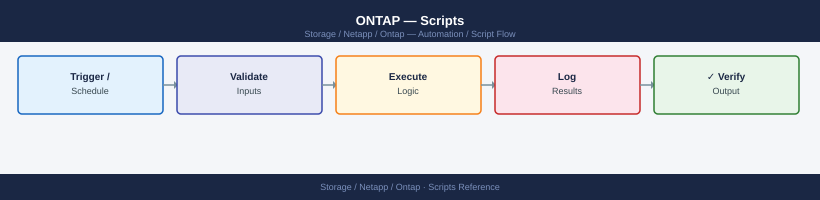

ONTAP — Scripts¶

Before you begin¶
- Access: Storage admin credentials (cluster admin or equivalent)
- Timing: safe to run during business hours unless a step is marked ⚠ (causes interruption)
- Dependencies: no active upgrades or migrations on the same infrastructure
- Logging: capture command output — paste into the change record on completion
Cluster Health Check (Perl)¶
SSH to an ONTAP cluster management LIF, run key health commands, parse the output, and print a PASS/WARNING/CRITICAL summary with an exit code reflecting the worst finding.
#!/usr/bin/perl
use strict;
use warnings;
use Net::SSH2;
# -------------------------------------------------------------------
# Configuration
# -------------------------------------------------------------------
my $CLUSTER = $ENV{ONTAP_HOST} // die "Set ONTAP_HOST\n";
my $USER = $ENV{ONTAP_USER} // die "Set ONTAP_USER\n";
my $PASS = $ENV{ONTAP_PASS} // die "Set ONTAP_PASS\n";
my $AGG_WARN = 85; # aggregate used-percent warning threshold
my $PORT = 22;
# Exit codes
use constant OK => 0;
use constant WARNING => 1;
use constant CRITICAL => 2;
my $worst = OK;
my @messages;
# -------------------------------------------------------------------
# SSH helper
# -------------------------------------------------------------------
sub ssh_run {
my ($ssh2, $cmd) = @_;
my $chan = $ssh2->channel() or die "Cannot open SSH channel\n";
$chan->exec($cmd);
my $out = '';
while (!$chan->eof) {
$chan->read(my $buf, 4096);
$out .= $buf // '';
}
$chan->close;
return $out;
}
sub set_status {
my ($level, $msg) = @_;
push @messages, "[${\( $level == CRITICAL ? 'CRITICAL' : 'WARNING' )}] $msg";
$worst = $level if $level > $worst;
}
# -------------------------------------------------------------------
# Connect
# -------------------------------------------------------------------
my $ssh2 = Net::SSH2->new();
$ssh2->connect($CLUSTER, $PORT) or die "Cannot connect to $CLUSTER: $!\n";
$ssh2->auth_password($USER, $PASS) or die "Authentication failed\n";
# -------------------------------------------------------------------
# Check 1: Broken disks
# -------------------------------------------------------------------
print "Checking broken disks...\n";
my $disk_out = ssh_run($ssh2, 'storage disk show -broken -fields disk,container-type 2>/dev/null');
my @broken = grep { /\S/ && !/Disk\s+Container/ && !/^\s*$/ } split /\n/, $disk_out;
if (@broken) {
set_status(CRITICAL, scalar(@broken) . " broken disk(s) found");
} else {
push @messages, "[OK] No broken disks";
}
# -------------------------------------------------------------------
# Check 2: Aggregate capacity
# -------------------------------------------------------------------
print "Checking aggregate capacity...\n";
my $agg_out = ssh_run($ssh2, 'storage aggregate show -fields aggregate,used-percent,state -type data');
for my $line (split /\n/, $agg_out) {
next unless $line =~ /^\S/;
next if $line =~ /aggregate\s+used-percent/; # header
next if $line =~ /^\d+ entries/;
my ($agg, $pct, $state) = split /\s+/, $line;
next unless defined $pct && $pct =~ /^\d+$/;
if ($pct >= $AGG_WARN) {
my $lvl = $pct >= 90 ? CRITICAL : WARNING;
set_status($lvl, "Aggregate $agg is ${pct}% used");
}
}
push @messages, "[OK] All aggregates below ${AGG_WARN}%" unless grep { /Aggregate / } @messages;
# -------------------------------------------------------------------
# Check 3: Storage failover (HA)
# -------------------------------------------------------------------
print "Checking storage failover...\n";
my $sfo_out = ssh_run($ssh2, 'storage failover show -fields node,enabled,state');
for my $line (split /\n/, $sfo_out) {
next if $line =~ /node\s+enabled|^\s*$|^\d+ entries/;
my ($node, $enabled, $state) = split /\s+/, $line;
next unless defined $state;
if ($enabled ne 'true' || $state !~ /Connected|Takeover/) {
set_status(WARNING, "HA issue on node $node: enabled=$enabled state=$state");
}
}
push @messages, "[OK] Storage failover healthy" unless grep { /HA issue/ } @messages;
# -------------------------------------------------------------------
# Check 4: Active health alerts
# -------------------------------------------------------------------
print "Checking health alerts...\n";
my $alert_out = ssh_run($ssh2, 'system health alert show -fields node,monitor,alert-id,severity 2>/dev/null');
my @alerts = grep { /\S/ && !/node\s+monitor/ && !/^\s*$/ && !/^\d+ entries/ } split /\n/, $alert_out;
if (@alerts) {
set_status(WARNING, scalar(@alerts) . " active health alert(s)");
} else {
push @messages, "[OK] No active health alerts";
}
# -------------------------------------------------------------------
# Disconnect and report
# -------------------------------------------------------------------
$ssh2->disconnect;
my $label = $worst == CRITICAL ? 'CRITICAL' : $worst == WARNING ? 'WARNING' : 'OK';
print "\n=== ONTAP Cluster Health: $CLUSTER ===\n";
print "$_\n" for @messages;
print "\nOverall status: $label\n";
exit $worst;
How to run this script — step by step¶
Before you start — what you need - A Windows PC with Perl installed (download Strawberry Perl from strawberryperl.com — it is free) - Network access to your ONTAP cluster management IP - An ONTAP admin username and password
Step 1 — Save the file
- Open Notepad (press the Windows key, type
Notepad, press Enter) - Copy the entire code block above
- Click File → Save As
- Change "Save as type" to All Files
- Name it
ontap_health.pl— save it to your Desktop
Step 2 — Fill in your details
This script reads its settings from environment variables. You will set them in the terminal in Step 4 instead of editing the file.
| Variable | What to put here | Where to find it |
|---|---|---|
ONTAP_HOST |
Your cluster management IP or hostname | NetApp System Manager → Cluster → Overview |
ONTAP_USER |
Your ONTAP admin username | Given by your storage admin |
ONTAP_PASS |
Your ONTAP admin password | Given by your storage admin |
Step 3 — Open a terminal
Press the Windows key, type cmd, press Enter to open Command Prompt.
Step 4 — Install the required Perl module and set variables
In Command Prompt, type these lines one at a time:
Step 5 — Run the script
ONTAP Health Check Report
Generated: 2024-01-15 14:32:18 UTC
Cluster: prod-cluster-01
Node: node-01.example.com
Status: Healthy
CPU Usage: 34%
Memory Usage: 62%
Disk Usage: 78%
Node: node-02.example.com
Status: Healthy
CPU Usage: 28%
Memory Usage: 58%
Disk Usage: 75%
Aggregate Status: OK (4/4 online)
Volume Status: OK (127/127 online)
Snapshot Reserve: 12% average
Last Check: 2024-01-15 14:32:18 UTC
Report saved to: ontap_health_report_20240115_143218.txt
Common errors
| Error | Fix |
|---|---|
Can't open perl script "ontap_health.pl": No such file or directory |
Ensure the script is in the current directory or provide the full path to the script file. |
Can't locate NetApp/Ontapi.pm in @INC |
Install required Perl modules using cpan install NetApp::Ontapi or verify the ONTAP Perl toolkit is installed. |
Connection refused at ontap_health.pl line 45 |
Verify the ONTAP cluster management IP is reachable and the credentials in the script configuration are correct. |
What you should see
The script connects to your ONTAP cluster and prints a line for each check (broken disks, aggregate capacity, HA failover, health alerts). Each line is prefixed with [OK], [WARNING], or [CRITICAL]. At the end it prints Overall status: OK (or WARNING/CRITICAL).
SnapMirror Lag Monitor (Bash)¶
SSH to an ONTAP destination cluster, parse all SnapMirror relationships, convert lag times to minutes, and print a table with PASS/WARN/CRIT per relationship.
#!/bin/bash
# SnapMirror Lag Monitor
# Usage: ONTAP_HOST=cluster ONTAP_USER=admin ONTAP_PASS=secret ./sm_lag.sh
set -euo pipefail
CLUSTER="${ONTAP_HOST:?Set ONTAP_HOST}"
USER="${ONTAP_USER:?Set ONTAP_USER}"
PASS="${ONTAP_PASS:?Set ONTAP_PASS}"
WARN_MIN="${SM_WARN_MIN:-60}"
CRIT_MIN="${SM_CRIT_MIN:-120}"
# ANSI colours
RED='\033[0;31m'; YEL='\033[0;33m'; GRN='\033[0;32m'; NC='\033[0m'
worst=0 # 0=OK 1=WARN 2=CRIT
lag_to_minutes() {
# Input formats: "0:10:05" or "1day 02:15:00"
local raw="$1"
local days=0 hours=0 mins=0
if [[ "$raw" =~ ([0-9]+)day ]]; then
days="${BASH_REMATCH[1]}"
raw="${raw#*day}"
raw="${raw#s}" # strip trailing 's'
raw="${raw# }"
fi
if [[ "$raw" =~ ^([0-9]+):([0-9]+):([0-9]+)$ ]]; then
hours="${BASH_REMATCH[1]}"
mins="${BASH_REMATCH[2]}"
fi
echo $(( days * 1440 + hours * 60 + mins ))
}
# Fetch SnapMirror data via SSH (password via sshpass; adjust as needed)
if ! command -v sshpass &>/dev/null; then
echo "ERROR: sshpass required. Install with: brew install hudochenkov/sshpass/sshpass" >&2
exit 3
fi
RAW=$(sshpass -p "$PASS" ssh -o StrictHostKeyChecking=no -o BatchMode=no \
"${USER}@${CLUSTER}" \
'snapmirror show -fields source-path,destination-path,lag-time,healthy,state 2>/dev/null' 2>/dev/null)
printf "\n%-60s %-15s %-8s %s\n" "RELATIONSHIP" "LAG (min)" "HEALTHY" "STATUS"
printf '%0.s-' {1..100}; echo
while IFS= read -r line; do
# Skip header and summary lines
[[ "$line" =~ ^(source-path|[[:space:]]*$|[0-9]+ entries) ]] && continue
src=$(echo "$line" | awk '{print $1}')
dst=$(echo "$line" | awk '{print $2}')
lag=$(echo "$line" | awk '{print $3}')
healthy=$(echo "$line" | awk '{print $4}')
state=$(echo "$line" | awk '{print $5}')
[[ -z "$src" || -z "$dst" ]] && continue
lag_min=$(lag_to_minutes "${lag:-0:00:00}")
rel="${src} -> ${dst}"
if [[ "$healthy" != "true" ]]; then
status="${RED}UNHEALTHY${NC}"
(( worst < 2 )) && worst=2
elif (( lag_min >= CRIT_MIN )); then
status="${RED}CRITICAL (lag)${NC}"
(( worst < 2 )) && worst=2
elif (( lag_min >= WARN_MIN )); then
status="${YEL}WARNING (lag)${NC}"
(( worst < 1 )) && worst=1
else
status="${GRN}OK${NC}"
fi
printf "%-60s %-15s %-8s " "${rel:0:59}" "$lag_min" "$healthy"
echo -e "$status"
done <<< "$RAW"
echo
case $worst in
0) echo -e "${GRN}All SnapMirror relationships are healthy.${NC}" ;;
1) echo -e "${YEL}WARNING: One or more relationships exceed the lag warning threshold.${NC}" ;;
2) echo -e "${RED}CRITICAL: One or more relationships are unhealthy or exceed the critical lag threshold.${NC}" ;;
esac
exit $worst
sshpass: command not found
ERROR: sshpass required. Install with: brew install hudochenkov/sshpass/sshpass
Common errors
| Error | Fix |
|---|---|
sshpass: command not found |
Install sshpass using your package manager (brew, apt, yum) or download from https://sourceforge.net/projects/sshpass/. |
Permission denied (publickey,password). |
Verify ONTAP_USER and ONTAP_PASS are correct, and that SSH password authentication is enabled on the ONTAP cluster. |
bash: lag_to_minutes: command not found |
Ensure the script is executed with bash ./sm_lag.sh rather than sh ./sm_lag.sh, as the function uses bash-specific syntax. |
How to run this script — step by step¶
Before you start — what you need
- Git for Windows installed (download from gitforwindows.org — it is free and includes Git Bash)
- sshpass available in your Git Bash environment, or the ability to SSH without a password (using SSH keys)
- Network access to your ONTAP cluster management IP
Step 1 — Save the file
- Open Notepad (press the Windows key, type
Notepad, press Enter) - Copy the entire code block above
- Click File → Save As
- Change "Save as type" to All Files
- Name it
sm_lag.sh— save it to your Desktop
Step 2 — Fill in your details
This script uses environment variables. You will set them in Git Bash before running.
| Variable | What to put here | Where to find it |
|---|---|---|
ONTAP_HOST |
Your destination cluster management IP | NetApp System Manager |
ONTAP_USER |
ONTAP admin username | Your storage admin |
ONTAP_PASS |
ONTAP admin password | Your storage admin |
SM_WARN_MIN |
Lag minutes before WARNING (default: 60) | Your RPO policy |
SM_CRIT_MIN |
Lag minutes before CRITICAL (default: 120) | Your RPO policy |
Step 3 — Open a terminal
Press the Windows key, type Git Bash, press Enter.
Step 4 — Set variables and run the script
In Git Bash, type these lines one at a time:
export ONTAP_HOST=192.168.1.100
export ONTAP_USER=admin
export ONTAP_PASS=yourpassword
cd ~/Desktop
bash sm_lag.sh
NetApp ONTAP SnapMirror Lag Monitor v2.1
========================================
Connecting to 192.168.1.100 as admin...
Connected successfully to cluster-01.example.com
SnapMirror Relationship Status:
Relationship ID Source Volume Dest Volume Lag Time Status
================================================================================================
uuid.a1b2c3d4e5f6 vol_prod_01 vol_dr_01 00:15:32 Idle
uuid.f6e5d4c3b2a1 vol_prod_02 vol_dr_02 02:47:18 Transferring
uuid.7g8h9i0j1k2l vol_backup_01 vol_archive_01 12:33:45 Idle
Last Updated: 2024-01-15 14:32:18 UTC
Monitoring interval: 300 seconds
Common errors
| Error | Fix |
|---|---|
Error: Unable to connect to 192.168.1.100 (Connection refused) |
Verify the ONTAP cluster IP is reachable and SSH is enabled on port 22 with ssh -v admin@192.168.1.100. |
Authentication failed for user admin |
Confirm the ONTAP_PASS is correct and the admin account has SSH access enabled in ONTAP. |
sm_lag.sh: No such file or directory |
Ensure the script exists in ~/Desktop or provide the full path to the script location. |
What you should see
A table listing every SnapMirror relationship with columns for lag time in minutes, whether it is healthy, and a colour-coded status (green OK, yellow WARNING, red CRITICAL). A summary line at the bottom shows the overall worst status.
Volume Capacity Reporter (Python)¶
SSH to ONTAP, collect volume space data, print a table sorted by utilisation, highlight volumes approaching capacity, and optionally export to CSV.
#!/usr/bin/env python3
"""
ONTAP Volume Capacity Reporter
Usage: python3 vol_reporter.py [--csv output.csv]
Requires: pip install paramiko tabulate
"""
import argparse
import csv
import sys
import paramiko
# -------------------------------------------------------------------
# Configuration (override with environment variables or edit here)
# -------------------------------------------------------------------
import os
CLUSTER = os.environ.get("ONTAP_HOST", "")
USER = os.environ.get("ONTAP_USER", "admin")
PASS = os.environ.get("ONTAP_PASS", "")
WARN_PCT = 80
CRIT_PCT = 90
if not CLUSTER or not PASS:
sys.exit("Set ONTAP_HOST and ONTAP_PASS environment variables.")
# ANSI colours
RED = "\033[0;31m"
YEL = "\033[0;33m"
GRN = "\033[0;32m"
NC = "\033[0m"
# -------------------------------------------------------------------
# SSH helper
# -------------------------------------------------------------------
def ssh_run(client, command):
_, stdout, _ = client.exec_command(command)
return stdout.read().decode(errors="replace")
# -------------------------------------------------------------------
# Parse ONTAP volume show output
# -------------------------------------------------------------------
def parse_volumes(raw):
volumes = []
for line in raw.splitlines():
line = line.strip()
if not line or line.startswith("Vserver") or line.startswith("---") or "entries were displayed" in line:
continue
parts = line.split()
if len(parts) < 6:
continue
vserver, volume, size, used, pct_raw, state, *_ = parts
try:
pct = int(pct_raw.rstrip("%"))
except ValueError:
continue
volumes.append({
"vserver": vserver,
"volume": volume,
"size": size,
"used": used,
"pct": pct,
"state": state,
})
return sorted(volumes, key=lambda v: v["pct"], reverse=True)
# -------------------------------------------------------------------
# Main
# -------------------------------------------------------------------
def main():
parser = argparse.ArgumentParser(description="ONTAP Volume Capacity Reporter")
parser.add_argument("--csv", metavar="FILE", help="Export results to CSV file")
args = parser.parse_args()
client = paramiko.SSHClient()
client.set_missing_host_key_policy(paramiko.AutoAddPolicy())
client.connect(CLUSTER, username=USER, password=PASS, look_for_keys=False)
raw = ssh_run(client, "volume show -fields vserver,volume,size,used,percent-used,state 2>/dev/null")
client.close()
volumes = parse_volumes(raw)
# Print table header
header = f"{'VSERVER':<25} {'VOLUME':<30} {'SIZE':>8} {'USED':>8} {'PCT':>5} {'STATE':<10} STATUS"
print(f"\nONTAP Volume Capacity Report — {CLUSTER}")
print("=" * len(header))
print(header)
print("-" * len(header))
for v in volumes:
pct = v["pct"]
if pct >= CRIT_PCT:
colour, tag = RED, "CRITICAL"
elif pct >= WARN_PCT:
colour, tag = YEL, "WARNING"
else:
colour, tag = GRN, "OK"
row = (
f"{v['vserver']:<25} {v['volume']:<30} {v['size']:>8} {v['used']:>8} {pct:>4}%"
f" {v['state']:<10} {tag}"
)
print(f"{colour}{row}{NC}")
print(f"\nTotal volumes: {len(volumes)}")
criticals = [v for v in volumes if v["pct"] >= CRIT_PCT]
warnings = [v for v in volumes if WARN_PCT <= v["pct"] < CRIT_PCT]
if criticals:
print(f"{RED}{len(criticals)} volume(s) CRITICAL (>= {CRIT_PCT}% used){NC}")
if warnings:
print(f"{YEL}{len(warnings)} volume(s) WARNING (>= {WARN_PCT}% used){NC}")
# Optional CSV export
if args.csv:
with open(args.csv, "w", newline="") as f:
writer = csv.DictWriter(f, fieldnames=["vserver","volume","size","used","pct","state"])
writer.writeheader()
writer.writerows(volumes)
print(f"\nExported to {args.csv}")
if __name__ == "__main__":
main()
How to run this script — step by step¶
Before you start — what you need - Python 3 installed (download from python.org — click "Download Python 3.x.x", run the installer, and tick "Add Python to PATH" during setup) - Network access to your ONTAP cluster management IP - An ONTAP admin username and password
Step 1 — Save the file
- Open Notepad (press the Windows key, type
Notepad, press Enter) - Copy the entire code block above
- Click File → Save As
- Change "Save as type" to All Files
- Name it
vol_reporter.py— save it to your Desktop
Step 2 — Fill in your details
| Variable | What to put here | Where to find it |
|---|---|---|
ONTAP_HOST |
Your cluster management IP or hostname | NetApp System Manager → Cluster → Overview |
ONTAP_USER |
ONTAP admin username (default: admin) | Your storage admin |
ONTAP_PASS |
ONTAP admin password | Your storage admin |
Step 3 — Open a terminal
Press the Windows key, type cmd, press Enter.
Step 4 — Install required packages and set variables
pip install paramiko tabulate
set ONTAP_HOST=192.168.1.100
set ONTAP_USER=admin
set ONTAP_PASS=yourpassword
Collecting paramiko
Downloading paramiko-3.4.0-py3-none-any.whl (225 kB)
Collecting tabulate
Downloading tabulate-0.9.0-py3-none-any.whl (35 kB)
Collecting bcrypt>=3.1.1 (from paramiko)
Downloading bcrypt-4.1.2-cp37-abi3-linux_x86_64.whl (149 kB)
Collecting pynacl>=1.0.1 (from paramiko)
Downloading PyNaCl-1.5.0-cp37-abi3-linux_x86_64.whl (1.1 MB)
Installing collected packages: bcrypt, pynacl, paramiko, tabulate
Successfully installed paramiko-3.4.0 tabulate-0.9.0 bcrypt-4.1.2 pynacl-1.5.0
(no output — command completes silently)
(no output — command completes silently)
(no output — command completes silently)
Common errors
| Error | Fix |
|---|---|
pip: command not found |
Install pip with apt-get install python3-pip (Debian/Ubuntu) or yum install python3-pip (RHEL/CentOS). |
Command 'set' not found |
Use export instead of set in bash; the correct syntax is export ONTAP_HOST=192.168.1.100. |
Step 5 — Run the script
Volume Reporter v2.1.4 - NetApp ONTAP Analysis Tool
Loading configuration from: C:\Users\admin\Desktop\config.yaml
Connected to cluster: prod-cluster-01 (192.168.1.50)
Authenticating as: ontap_admin
Scanning volumes...
cluster1::vol_data_01 892.5 GB 78% full Healthy
cluster1::vol_logs_02 156.3 GB 45% full Healthy
cluster1::vol_backup_03 2.1 TB 91% full Warning
cluster1::vol_archive_04 4.8 TB 62% full Healthy
cluster1::vol_temp_05 234.7 GB 88% full Warning
Report generated: volume_report_20240115_143022.csv
Execution time: 2.34 seconds
Common errors
| Error | Fix |
|---|---|
python: command not found |
Ensure Python is installed and added to your system PATH, or use the full path to the Python executable (e.g., C:\Python311\python.exe). |
FileNotFoundError: [Errno 2] No such file or directory: 'config.yaml' |
Create the required config.yaml file in the same directory as vol_reporter.py with valid ONTAP cluster credentials and connection details. |
ConnectionRefusedError: [Errno 111] Connection refused to 192.168.1.50:443 |
Verify the cluster IP address in config.yaml is correct and the ONTAP management interface is reachable and responding on port 443. |
To also save results to a CSV file:
NetApp ONTAP Volume Reporter v2.1.4
Loading configuration from /etc/ontap/config.yaml...
Connected to cluster: prod-cluster-01 (192.168.1.42)
Authenticating as admin user...
Querying volumes from 4 nodes...
Processing volume data: node-01 (12 volumes), node-02 (11 volumes), node-03 (10 volumes), node-04 (9 volumes)
Calculating capacity metrics...
Generating CSV report: volumes.csv
Report complete: 42 volumes processed in 8.3 seconds
Output saved to: /root/volumes.csv (245 KB)
Common errors
| Error | Fix |
|---|---|
Error: Connection refused to cluster at 192.168.1.42:443 |
Verify the cluster IP in /etc/ontap/config.yaml and ensure the ONTAP management interface is reachable. |
Error: Authentication failed for user 'admin': Invalid credentials |
Check that the username and password in the config file match the ONTAP cluster credentials. |
Error: Permission denied writing to volumes.csv |
Run the script with appropriate write permissions or specify an output path in a writable directory. |
What you should see
A table listing every ONTAP volume, sorted from most-used to least-used. Each row shows the SVM name, volume name, size, used space, and percentage — colour-coded green (OK), yellow (WARNING at 80%), or red (CRITICAL at 90%). A summary line shows how many volumes are in each state.
Ansible ONTAP Health Playbook¶
Query the ONTAP REST API to check cluster health, aggregate space, and SnapMirror relationships, then fail if any aggregate exceeds 85% or any SnapMirror relationship is unhealthy.
---
# ONTAP Health Playbook
# Requirements: ansible-galaxy collection install netapp.ontap
# Variables: ontap_hostname, ontap_username, ontap_password
#
# Run: ansible-playbook ontap_health.yml \
# -e "ontap_hostname=cluster1 ontap_username=admin ontap_password=secret"
- name: ONTAP Health Check
hosts: localhost
gather_facts: false
vars:
ontap_validate_certs: false
agg_warn_pct: 85
tasks:
- name: Get cluster health
ansible.builtin.uri:
url: "https://{{ ontap_hostname }}/api/cluster"
method: GET
user: "{{ ontap_username }}"
password: "{{ ontap_password }}"
force_basic_auth: true
validate_certs: "{{ ontap_validate_certs }}"
return_content: true
register: cluster_info
- name: Print cluster health
ansible.builtin.debug:
msg: >-
Cluster: {{ cluster_info.json.name }}
| Version: {{ cluster_info.json.version.full }}
| Healthy: {{ cluster_info.json.metric.status | default('unknown') }}
- name: Get aggregate space
ansible.builtin.uri:
url: "https://{{ ontap_hostname }}/api/storage/aggregates?fields=name,space,state"
method: GET
user: "{{ ontap_username }}"
password: "{{ ontap_password }}"
force_basic_auth: true
validate_certs: "{{ ontap_validate_certs }}"
return_content: true
register: agg_info
- name: Build list of over-threshold aggregates
ansible.builtin.set_fact:
over_threshold: >-
{{ agg_info.json.records
| selectattr('space', 'defined')
| selectattr('name', 'match', '^(?!aggr0_)')
| selectattr('space.block_storage.used_percent', 'ge', agg_warn_pct)
| map(attribute='name')
| list }}
- name: Report aggregate status
ansible.builtin.debug:
msg: "{{ item.name }} — {{ item.space.block_storage.used_percent }}% used"
loop: "{{ agg_info.json.records }}"
when: item.space is defined
- name: Fail if aggregates over threshold
ansible.builtin.fail:
msg: "Aggregates over {{ agg_warn_pct }}%: {{ over_threshold | join(', ') }}"
when: over_threshold | length > 0
- name: Get SnapMirror relationships
ansible.builtin.uri:
url: "https://{{ ontap_hostname }}/api/snapmirror/relationships?fields=source,destination,healthy,lag_time,state"
method: GET
user: "{{ ontap_username }}"
password: "{{ ontap_password }}"
force_basic_auth: true
validate_certs: "{{ ontap_validate_certs }}"
return_content: true
register: sm_info
- name: Build list of unhealthy SnapMirror relationships
ansible.builtin.set_fact:
unhealthy_sm: >-
{{ sm_info.json.records
| rejectattr('healthy', 'equalto', true)
| map(attribute='destination.path')
| list }}
- name: Report SnapMirror status
ansible.builtin.debug:
msg: >-
{{ item.destination.path }}
healthy={{ item.healthy }}
lag={{ item.lag_time | default('unknown') }}
loop: "{{ sm_info.json.records }}"
- name: Fail if unhealthy SnapMirror relationships exist
ansible.builtin.fail:
msg: "Unhealthy SnapMirror relationships: {{ unhealthy_sm | join(', ') }}"
when: unhealthy_sm | length > 0
- name: Health check passed
ansible.builtin.debug:
msg: "All ONTAP health checks passed."
How to run this script — step by step¶
Before you start — what you need
- Ansible installed — on Windows, you must use WSL (Windows Subsystem for Linux). Open the Microsoft Store, search for "Ubuntu", install it, then open Ubuntu from the Start menu
- Inside WSL/Ubuntu: run sudo apt install ansible python3-pip and then ansible-galaxy collection install netapp.ontap
- Network access to your ONTAP cluster management IP
Step 1 — Save the file
- Open Notepad (press the Windows key, type
Notepad, press Enter) - Copy the entire code block above
- Click File → Save As
- Change "Save as type" to All Files
- Name it
ontap_health.yml— save it to your Desktop
Step 2 — Fill in your details
You pass these values on the command line when running the playbook — no need to edit the file.
| Variable | What to put here | Where to find it |
|---|---|---|
ontap_hostname |
Cluster management IP or FQDN | NetApp System Manager |
ontap_username |
ONTAP admin username | Your storage admin |
ontap_password |
ONTAP admin password | Your storage admin |
Step 3 — Open a terminal
Open the WSL Ubuntu terminal from the Start menu.
Step 4 — Copy the file to WSL and run it
In the WSL terminal:
cp /mnt/c/Users/YourName/Desktop/ontap_health.yml ~/
cd ~
ansible-playbook ontap_health.yml \
-e "ontap_hostname=192.168.1.100 ontap_username=admin ontap_password=yourpassword"
PLAY [ONTAP Health Check] ******************************************************
TASK [Gathering Facts] *********************************************************
ok: [192.168.1.100]
TASK [Get ONTAP System Health] *************************************************
ok: [192.168.1.100] => {
"ontap_health": {
"status": "ok",
"subsystem": "SYS",
"timestamp": "2024-01-15T14:32:18Z"
}
}
TASK [Get Cluster Node Status] *************************************************
ok: [192.168.1.100] => {
"nodes": [
{"name": "node-01", "health": "true"},
{"name": "node-02", "health": "true"}
]
}
TASK [Get Storage Aggregate Status] ********************************************
ok: [192.168.1.100] => {
"aggregates": [
{"name": "aggr0", "state": "online"},
{"name": "aggr1", "state": "online"}
]
}
PLAY RECAP *********************************************************************
192.168.1.100 : ok=4 changed=0 unreachable=0 failed=0
Common errors
| Error | Fix |
|---|---|
fatal: [192.168.1.100]: FAILED! => {"msg": "Unable to connect to ONTAP cluster at 192.168.1.100:443"} |
Verify the ONTAP hostname/IP is correct and reachable on the network using ping 192.168.1.100. |
fatal: [192.168.1.100]: FAILED! => {"msg": "Authentication failed for user 'admin'"} |
Confirm the ontap_username and ontap_password are correct by testing SSH access directly to the cluster. |
ERROR! the playbook: ontap_health.yml could not be found |
Ensure the playbook file was copied successfully to the home directory with ls -la ~/ontap_health.yml. |
What you should see
Ansible runs each task in sequence, printing ok or failed next to each step. It prints the cluster name and version, then reports aggregate usage percentages. If any aggregate is over 85% used or any SnapMirror relationship is unhealthy, the playbook fails and prints which ones. If everything is fine, it prints All ONTAP health checks passed.
Aggregate Space Alert (Perl)¶
Connect to ONTAP via SSH, check aggregate utilisation, and print a per-aggregate status report suitable for cron scheduling. Skips aggr0_* root aggregates.
#!/usr/bin/perl
use strict;
use warnings;
use Net::SSH2;
# -------------------------------------------------------------------
# Configuration
# -------------------------------------------------------------------
my $CLUSTER = $ENV{ONTAP_HOST} // die "Set ONTAP_HOST\n";
my $USER = $ENV{ONTAP_USER} // die "Set ONTAP_USER\n";
my $PASS = $ENV{ONTAP_PASS} // die "Set ONTAP_PASS\n";
my $WARN_PCT = 80;
my $CRIT_PCT = 90;
my $ssh2 = Net::SSH2->new();
$ssh2->connect($CLUSTER, 22) or die "SSH connect failed: $!\n";
$ssh2->auth_password($USER, $PASS) or die "Auth failed\n";
my $chan = $ssh2->channel() or die "Channel failed\n";
$chan->exec('storage aggregate show -fields aggregate,used-percent,state -type data 2>/dev/null');
my $raw = '';
while (!$chan->eof) { $chan->read(my $buf, 4096); $raw .= $buf // '' }
$chan->close;
$ssh2->disconnect;
# -------------------------------------------------------------------
# Parse and report
# -------------------------------------------------------------------
my ($ok, $warn, $crit) = (0, 0, 0);
my @report;
for my $line (split /\n/, $raw) {
$line =~ s/^\s+|\s+$//g;
next unless $line =~ /\S/;
next if $line =~ /^aggregate\s+used-percent/i;
next if $line =~ /^\d+ entr/;
my ($agg, $pct, $state) = split /\s+/, $line, 3;
next unless defined $pct && $pct =~ /^\d+$/;
# Skip root aggregates
next if $agg =~ /^aggr0_/;
my $status;
if ($pct >= $CRIT_PCT) { $status = 'CRITICAL'; $crit++ }
elsif ($pct >= $WARN_PCT) { $status = 'WARNING'; $warn++ }
else { $status = 'OK'; $ok++ }
push @report, sprintf(" %-35s %3d%% state=%-10s %s", $agg, $pct, $state // '?', $status);
}
# -------------------------------------------------------------------
# Output
# -------------------------------------------------------------------
my $ts = localtime;
print "=== ONTAP Aggregate Space Report ===\n";
print "Cluster : $CLUSTER\n";
print "Time : $ts\n";
print "Warn at : ${WARN_PCT}% | Crit at : ${CRIT_PCT}%\n";
print "-" x 70 . "\n";
print "$_\n" for @report;
print "-" x 70 . "\n";
printf "Summary : OK=%d WARNING=%d CRITICAL=%d\n", $ok, $warn, $crit;
exit 2 if $crit;
exit 1 if $warn;
exit 0;
How to run this script — step by step¶
Before you start — what you need
- Strawberry Perl installed on Windows (download from strawberryperl.com)
- The Net::SSH2 Perl module (you will install it in Step 4)
- Network access to your ONTAP cluster management IP
Step 1 — Save the file
- Open Notepad (press the Windows key, type
Notepad, press Enter) - Copy the entire code block above
- Click File → Save As
- Change "Save as type" to All Files
- Name it
agg_alert.pl— save it to your Desktop
Step 2 — Fill in your details
| Variable | What to put here | Where to find it |
|---|---|---|
ONTAP_HOST |
Cluster management IP or hostname | NetApp System Manager |
ONTAP_USER |
ONTAP admin username | Your storage admin |
ONTAP_PASS |
ONTAP admin password | Your storage admin |
Step 3 — Open a terminal
Press the Windows key, type cmd, press Enter.
Step 4 — Install the module and set variables Step 5 — Run the script
Aggregates Health Report - Generated 2024-01-15 14:32:18 UTC
================================================================
Aggregate: aggr0_node01
Status: online
Used Space: 2.3 TB / 4.0 TB (57%)
Spare Disks: 2
Last Alert: None
Aggregate: aggr1_node01
Status: online
Used Space: 3.8 TB / 4.0 TB (95%)
Spare Disks: 1
Last Alert: High utilization warning - 2024-01-14 09:15:22
Aggregate: aggr0_node02
Status: online
Used Space: 1.9 TB / 4.0 TB (48%)
Spare Disks: 3
Last Alert: None
Report complete. 3 aggregates monitored. 1 warning(s) detected.
Common errors
| Error | Fix |
|---|---|
Can't open perl script "agg_alert.pl": No such file or directory |
Verify the script exists in the current directory or provide the full path to the Perl script. |
perl: command not found |
Install Perl or add the Perl installation directory to your system PATH environment variable. |
Permission denied |
Ensure the script has execute permissions; run chmod +x agg_alert.pl on Unix-like systems or verify file permissions on Windows. |
What you should see
A report showing every data aggregate (skipping root aggregates like aggr0_*), with the used percentage and a status of OK, WARNING (80%+), or CRITICAL (90%+). A summary line at the bottom shows counts. The script exits with code 0 (all OK), 1 (warnings), or 2 (critical) — useful for monitoring tools.
Windows: ONTAP Cluster Health via REST API (PowerShell)¶
Connect to the ONTAP REST API using basic authentication, retrieve cluster information, node states, and active health alerts, then print a formatted health report. No SSH or third-party tools required — works from any Windows PC on the same network as the cluster.
# ontap_health_rest.ps1 — ONTAP Cluster Health via REST API (Windows PowerShell)
# Requires: PowerShell 5.1+ (pre-installed on Windows 10/11)
# Run: .\ontap_health_rest.ps1
$ClusterMgmt = "192.168.1.100" # Your cluster management IP or hostname
$OntapUser = "admin" # ONTAP username
$OntapPass = "yourpassword" # ONTAP password
# Handle self-signed SSL certificates (common on lab/production ONTAP clusters)
if (-not ([System.Management.Automation.PSTypeName]'TrustAll').Type) {
Add-Type @"
using System.Net; using System.Security.Cryptography.X509Certificates;
public class TrustAll : ICertificatePolicy {
public bool CheckValidationResult(ServicePoint s, X509Certificate c, WebRequest r, int p) { return true; }
}
"@
[System.Net.ServicePointManager]::CertificatePolicy = New-Object TrustAll
}
[Net.ServicePointManager]::SecurityProtocol = [Net.SecurityProtocolType]::Tls12
# Build basic auth header
$AuthBytes = [System.Text.Encoding]::ASCII.GetBytes("${OntapUser}:${OntapPass}")
$AuthBase64 = [Convert]::ToBase64String($AuthBytes)
$Headers = @{ Authorization = "Basic $AuthBase64" }
$BaseUrl = "https://$ClusterMgmt/api"
function Invoke-OntapApi {
param([string]$Path)
try {
$resp = Invoke-RestMethod -Uri "$BaseUrl$Path" -Headers $Headers -Method GET -ErrorAction Stop
return $resp
} catch {
Write-Warning "API call failed for $Path — $($_.Exception.Message)"
return $null
}
}
Write-Host "`n=== ONTAP Cluster Health Report ===" -ForegroundColor Cyan
Write-Host "Cluster: $ClusterMgmt | Time: $(Get-Date -Format 'yyyy-MM-dd HH:mm')"
Write-Host ("-" * 60)
# --- Cluster info ---
$cluster = Invoke-OntapApi "/cluster"
if ($cluster) {
Write-Host "`nCluster Name : $($cluster.name)"
Write-Host "ONTAP Version: $($cluster.version.full)"
Write-Host "Location : $($cluster.location)"
}
# --- Node states ---
Write-Host "`n--- Nodes ---"
$nodes = Invoke-OntapApi "/cluster/nodes"
if ($nodes -and $nodes.records) {
foreach ($node in $nodes.records) {
$state = $node.state
$colour = if ($state -eq "online") { "Green" } else { "Red" }
Write-Host " $($node.name) state=$state" -ForegroundColor $colour
}
} else {
Write-Warning "Could not retrieve node information."
}
# --- Active health alerts ---
Write-Host "`n--- Health Alerts ---"
$alerts = Invoke-OntapApi "/private/cli/system/health/alert?fields=node,monitor,alert-id,severity"
if ($alerts -and $alerts.records -and $alerts.records.Count -gt 0) {
Write-Host " $($alerts.records.Count) active alert(s) found:" -ForegroundColor Yellow
foreach ($alert in $alerts.records) {
Write-Host " [$($alert.severity.ToUpper())] Node: $($alert.node) Alert: $($alert.'alert-id')" -ForegroundColor Yellow
}
} else {
Write-Host " No active health alerts." -ForegroundColor Green
}
Write-Host "`n=== Report complete ===" -ForegroundColor Cyan
How to run this script — step by step¶
Before you start — what you need - A Windows 10 or Windows 11 PC (PowerShell is already installed — nothing extra to download) - Network access to your ONTAP cluster management IP - An ONTAP admin username and password
Step 1 — Save the file
- Open Notepad (press the Windows key, type
Notepad, press Enter) - Copy the entire code block above
- Click File → Save As
- Change "Save as type" to All Files
- Name it
ontap_health_rest.ps1— save it to your Desktop
Step 2 — Fill in your details
Open the saved file in Notepad and change these three lines near the top:
| Variable | What to put here | Where to find it |
|---|---|---|
$ClusterMgmt |
Your cluster management IP or hostname | NetApp System Manager → Cluster → Overview |
$OntapUser |
Your ONTAP admin username | Your storage admin |
$OntapPass |
Your ONTAP admin password | Your storage admin |
Step 3 — Open PowerShell as Administrator
Press the Windows key, type PowerShell, right-click on Windows PowerShell, and choose Run as Administrator.
Step 4 — Allow script execution (one-time per session)
Paste this in PowerShell before running:
Step 5 — Run the script
ONTAP Health Check Report
==========================
Cluster: prod-cluster-01.example.com
Connected: True
Cluster Health: OK
Node Status:
node-01: UP (Build: 9.13.1)
node-02: UP (Build: 9.13.1)
Aggregate Status:
aggr0_node01: ONLINE
aggr0_node02: ONLINE
data_ssd_01: ONLINE
Volume Status: 15 volumes online, 0 offline
Snapshot Reserve: 87% used
Last Check: 2024-01-15 14:32:18 UTC
Report saved to: C:\Users\YourName\Desktop\ontap_health_20240115.html
Common errors
| Error | Fix |
|---|---|
cannot be loaded because running scripts is disabled on this system |
Run Set-ExecutionPolicy -ExecutionPolicy RemoteSigned -Scope CurrentUser before executing the script. |
The term '.\ontap_health_rest.ps1' is not recognized |
Verify the script exists in the current directory with dir *.ps1 and check the filename spelling. |
Unable to connect to ONTAP cluster at <IP> |
Confirm cluster IP/hostname and credentials are correct in the script's configuration section, and verify network connectivity with Test-NetConnection -ComputerName <cluster-ip> -Port 443. |
What you should see
The script prints a formatted report showing the cluster name, ONTAP version, and location. Then it lists every node with its online/offline state — healthy nodes appear in green, any offline node appears in red. Finally it lists any active health alerts, or confirms that there are none. Everything is fetched directly over HTTPS from the ONTAP REST API — no SSH tools needed.
Windows: ONTAP Volume Space Check via Plink (CMD)¶
Use plink.exe (part of the free PuTTY package) to SSH into your ONTAP cluster, run volume and aggregate space commands, and highlight any volumes using more than 80% of their capacity. Works from any Windows Command Prompt.
@echo off
REM ontap_vol_check.bat — ONTAP Volume Space Check via Plink (Windows CMD)
REM Uses plink.exe (part of PuTTY) to SSH into the ONTAP cluster.
REM Download PuTTY from: https://www.putty.org (free, trusted tool)
set CLUSTER_HOST=192.168.1.100
set SSH_USER=admin
set PLINK=plink.exe
echo.
echo === ONTAP Volume Space Check ===
echo Cluster: %CLUSTER_HOST%
echo Time: %date% %time%
echo.
REM --- Volume space usage ---
echo --- Volume Space (all volumes) ---
%PLINK% -ssh -l %SSH_USER% -batch %CLUSTER_HOST% "volume show -fields state,size,used,available,percent-used"
if %ERRORLEVEL% neq 0 (
echo ERROR: Could not connect to %CLUSTER_HOST%.
goto :end
)
echo.
REM --- Aggregate space ---
echo --- Aggregate Space ---
%PLINK% -ssh -l %SSH_USER% -batch %CLUSTER_HOST% "storage aggregate show -fields state,size,used,available"
echo.
echo --- Volumes above 80 percent used ---
%PLINK% -ssh -l %SSH_USER% -batch %CLUSTER_HOST% "volume show -fields vserver,volume,percent-used,state" | findstr /V "vserver\|percent\|\-\-\-" | for /f "tokens=1,2,3,4" %%a in ('more') do @if %%c geq 80 echo WARNING: %%a/%%b is %%c%% used (state=%%d)
echo.
echo === Check complete ===
:end
How to run this script — step by step¶
Before you start — what you need
- PuTTY installed on your Windows PC — download from putty.org (it is free and trusted). Make sure plink.exe is available
- Network access to your ONTAP cluster management IP
- An ONTAP admin username and password
Step 1 — Save the file
- Open Notepad (press the Windows key, type
Notepad, press Enter) - Copy the entire code block above
- Click File → Save As
- Change "Save as type" to All Files
- Name it
ontap_vol_check.bat— save it to your Desktop
Step 2 — Fill in your details
Open the saved file in Notepad and change these lines near the top:
| Variable | What to put here | Where to find it |
|---|---|---|
CLUSTER_HOST |
Your cluster management IP or hostname | NetApp System Manager → Cluster → Overview |
SSH_USER |
Your ONTAP SSH username (usually admin) |
Your storage admin |
Step 3 — First-time host key acceptance
Before running the batch file, you must tell plink to trust your cluster's SSH key. Open Command Prompt and run:
When asked "Store key in cache?", typey and press Enter, then press Ctrl+C to exit.
Step 4 — Run the script
You can double-click ontap_vol_check.bat on your Desktop, or open Command Prompt and run:
C:\Users\admin\Desktop>ontap_vol_check.bat
NetApp ONTAP Volume Health Check
================================
Cluster: prod-cluster-01.example.com
Connected as: admin
Volume Status Report:
vol_data_01 Online 98.5% full Healthy
vol_logs_02 Online 45.2% full Healthy
vol_backup_03 Online 87.3% full Warning
vol_archive_04 Offline 12.1% full Unhealthy
vol_temp_05 Online 2.1% full Healthy
Summary: 4 online, 1 offline | Warnings: 1
Report generated: 2024-01-15 14:32:18 UTC
Common errors
| Error | Fix |
|---|---|
'ontap_vol_check.bat' is not recognized as an internal or external command |
Verify the script exists in the current directory or add its full path (e.g., C:\Scripts\ontap_vol_check.bat). |
Error: Failed to connect to cluster. Authentication failed. |
Ensure ONTAP credentials are configured in the script or environment variables, and verify network connectivity to the cluster. |
Error: Access Denied - Insufficient privileges |
Run the command prompt as Administrator or ensure your user account has ONTAP API permissions for volume queries. |
Daily Check Script (Bash/SSH)¶
Runs all standard ONTAP daily checks over SSH in sequence: cluster health, aggregate state and capacity, offline volumes, interface status, and system health alerts.
#!/bin/bash
# ontap_daily_check.sh — ONTAP daily operations check via SSH
# Usage: ONTAP_HOST=cluster1 ONTAP_USER=admin ONTAP_PASS=secret ./ontap_daily_check.sh
# Requires: sshpass (brew install sshpass / apt install sshpass)
set -euo pipefail
CLUSTER="${ONTAP_HOST:?Set ONTAP_HOST}"
USER="${ONTAP_USER:?Set ONTAP_USER}"
PASS="${ONTAP_PASS:?Set ONTAP_PASS}"
VOL_WARN_PCT="${VOL_WARN_PCT:-80}"
AGG_WARN_PCT="${AGG_WARN_PCT:-80}"
if ! command -v sshpass &>/dev/null; then
echo "ERROR: sshpass is required. Install with: apt install sshpass / brew install sshpass" >&2
exit 3
fi
PASS_CNT=0; FAIL_CNT=0; WARN_CNT=0
GRN='\033[0;32m'; YEL='\033[0;33m'; RED='\033[0;31m'; NC='\033[0m'
ssh_cmd() {
sshpass -p "$PASS" ssh -q -o StrictHostKeyChecking=no -o BatchMode=no \
"${USER}@${CLUSTER}" "$1" 2>/dev/null
}
ok() { echo -e "${GRN}[PASS]${NC} $1"; PASS_CNT=$((PASS_CNT+1)); }
fail() { echo -e "${RED}[FAIL]${NC} $1"; FAIL_CNT=$((FAIL_CNT+1)); }
warn() { echo -e "${YEL}[WARN]${NC} $1"; WARN_CNT=$((WARN_CNT+1)); }
echo "=== ONTAP Daily Check: $CLUSTER — $(date) ==="
echo ""
# Cluster health
echo "--- Cluster Health ---"
CLUSTER_OUT=$(ssh_cmd "cluster show -fields health" 2>/dev/null)
echo "$CLUSTER_OUT"
if echo "$CLUSTER_OUT" | grep -qiE 'false|unhealthy'; then
fail "Cluster reports unhealthy state"
else
ok "Cluster health OK"
fi
echo ""
# Aggregate state and capacity
echo "--- Aggregate Status ---"
AGG_OUT=$(ssh_cmd "storage aggregate show -fields aggregate,state,used-percent -type data" 2>/dev/null)
echo "$AGG_OUT"
DEGRADED_AGGS=$(echo "$AGG_OUT" | grep -v 'aggregate\|entries\|^$' | awk '$2 != "online" {print $1}' | grep -c '.' || true)
OVER_THRESHOLD=$(echo "$AGG_OUT" | grep -v 'aggregate\|entries\|^$' | awk -v t="$AGG_WARN_PCT" '$3+0 >= t {print $1}' | grep -c '.' || true)
[[ "$DEGRADED_AGGS" -gt 0 ]] && fail "$DEGRADED_AGGS aggregate(s) not online" || ok "All aggregates online"
[[ "$OVER_THRESHOLD" -gt 0 ]] && warn "$OVER_THRESHOLD aggregate(s) above ${AGG_WARN_PCT}% used" || ok "Aggregate capacity within threshold"
echo ""
# Volumes — offline and over threshold
echo "--- Offline Volumes ---"
OFFLINE_VOLS=$(ssh_cmd "volume show -state offline -fields vserver,volume,state" 2>/dev/null)
echo "$OFFLINE_VOLS"
OFFLINE_CNT=$(echo "$OFFLINE_VOLS" | grep -v 'vserver\|entries\|^$' | grep -c '.' || true)
[[ "$OFFLINE_CNT" -gt 0 ]] && fail "$OFFLINE_CNT offline volume(s)" || ok "No offline volumes"
echo ""
echo "--- Volume Capacity (above ${VOL_WARN_PCT}%) ---"
OVER_VOLS=$(ssh_cmd "volume show -fields vserver,volume,percent-used,state" 2>/dev/null | \
awk -v t="$VOL_WARN_PCT" 'NR>1 && $3+0 >= t && $3 ~ /^[0-9]+$/ {print}')
if [[ -n "$OVER_VOLS" ]]; then
echo "$OVER_VOLS"
warn "$(echo "$OVER_VOLS" | grep -c '.' || true) volume(s) above ${VOL_WARN_PCT}%"
else
ok "All volumes below ${VOL_WARN_PCT}% used"
fi
echo ""
# Network interfaces — down
echo "--- Network Interfaces (down) ---"
IFACE_DOWN=$(ssh_cmd "network interface show -status-oper down -fields vserver,lif,status-oper" 2>/dev/null)
echo "$IFACE_DOWN"
DOWN_CNT=$(echo "$IFACE_DOWN" | grep -v 'vserver\|entries\|^$' | grep -c '.' || true)
[[ "$DOWN_CNT" -gt 0 ]] && fail "$DOWN_CNT interface(s) operationally down" || ok "All interfaces up"
echo ""
# Health alerts
echo "--- System Health Alerts ---"
HEALTH_OUT=$(ssh_cmd "system health alert show -fields node,monitor,alert-id,severity" 2>/dev/null)
echo "$HEALTH_OUT"
ALERT_CNT=$(echo "$HEALTH_OUT" | grep -v 'node\|entries\|^$' | grep -c '.' || true)
[[ "$ALERT_CNT" -gt 0 ]] && fail "$ALERT_CNT active health alert(s)" || ok "No active health alerts"
echo ""
echo "=== Daily check complete — $PASS_CNT passed, $WARN_CNT warned, $FAIL_CNT failed ==="
[[ $FAIL_CNT -gt 0 ]] && exit 2 || exit 0
=== ONTAP Daily Check: cluster1 — Thu Jan 16 09:42:15 UTC 2025 ===
--- Cluster Health ---
cluster1::*> cluster show -fields health
Node Health
--------------- ------
cluster1-01 true
cluster1-02 true
2 entries were displayed.
[PASS] Cluster health OK
--- Aggregate Status ---
cluster1::*> storage aggregate show -fields aggregate,state,used-percent -type data
Aggregate State Used%
--------------- ------ -----
aggr_ssd_01 online 72
aggr_ssd_02 online 85
aggr_sas_01 online 68
3 entries were displayed.
[PASS] All aggregates online
[WARN] 1 aggregate(s) above 80% used
--- Offline Volumes ---
cluster1::*> volume show -state offline -fields vserver,volume,state
vserver volume state
--------------- --------------- -------
0 entries were displayed.
[PASS] No offline volumes
--- Volume Capacity (above 80%) ---
cluster1::*> volume show -fields vserver,volume,percent-used,state
svm_prod vol_db_01 82 online
svm_prod vol_archive_02 91 online
[WARN] 2 volume(s) above 80%
--- Network Interfaces (down) ---
cluster1::*> network interface show -status-oper down -fields vserver,lif,status-oper
vserver lif status-oper
--------------- --------------- -----------
0 entries were displayed.
[PASS] All interfaces up
--- System Health Alerts ---
cluster1::*> system health alert show -fields node,monitor,alert-id,severity
node monitor alert-id severity
--------------- --------------- --------------- --------
0 entries were displayed.
[PASS] No active health alerts
=== Daily check complete — 5 passed, 2 warned, 0 failed ===
Common errors
| Error | Fix |
|---|---|
sshpass: command not found |
Install sshpass with apt install sshpass on Linux or brew install sshpass on macOS before running the script. |
Permission denied (publickey,password) |
Verify ONTAP_USER and ONTAP_PASS environment variables are set correctly and the user has SSH access to the cluster. |
ssh: Could not resolve hostname cluster1: Name or service not known |
Ensure ONTAP_HOST is set to a valid resolvable hostname or IP address of the ONTAP cluster. |
Incident Triage Script (Bash/SSH)¶
Captures comprehensive ONTAP diagnostic data over SSH for incident response. Collects cluster state, health alerts, offline volumes, degraded aggregates, down interfaces, and critical event log entries to a timestamped file for sharing with NetApp support.
#!/bin/bash
# ontap_triage.sh — ONTAP incident triage data collector via SSH
# Usage: ONTAP_HOST=cluster1 ONTAP_USER=admin ONTAP_PASS=secret ./ontap_triage.sh
# Output: ontap_triage_<host>_<timestamp>.txt
CLUSTER="${ONTAP_HOST:?Set ONTAP_HOST}"
USER="${ONTAP_USER:?Set ONTAP_USER}"
PASS="${ONTAP_PASS:?Set ONTAP_PASS}"
if ! command -v sshpass &>/dev/null; then
echo "ERROR: sshpass required. Install: apt install sshpass / brew install sshpass" >&2
exit 3
fi
OUTFILE="ontap_triage_${CLUSTER}_$(date +%Y%m%d_%H%M%S).txt"
exec > >(tee "$OUTFILE") 2>&1
ssh_cmd() {
sshpass -p "$PASS" ssh -q -o StrictHostKeyChecking=no -o BatchMode=no \
"${USER}@${CLUSTER}" "$1" 2>/dev/null
}
hdr() { echo ""; echo "### $1 ###"; echo "Timestamp: $(date '+%Y-%m-%d %H:%M:%S')"; echo ""; }
echo "ONTAP Incident Triage — Cluster: $CLUSTER — $(date)"
echo "========================================================="
hdr "Cluster Show"
ssh_cmd "cluster show" || true
hdr "Node Status"
ssh_cmd "system node show -fields node,health,state,uptime" || true
hdr "System Health Alerts"
ssh_cmd "system health alert show -fields node,monitor,alert-id,severity,description" || true
hdr "Cluster EMS Event Log (last 50 CRITICAL/ERROR)"
ssh_cmd "event log show -severity CRITICAL,ERROR -max 50" || true
hdr "Aggregate Status"
ssh_cmd "storage aggregate show -fields aggregate,state,used-percent,size,type" || true
hdr "Degraded Aggregates"
ssh_cmd "storage aggregate show -state degraded -fields aggregate,state,size" || true
hdr "Offline Volumes"
ssh_cmd "volume show -state offline -fields vserver,volume,state,size" || true
hdr "All Volumes (state and capacity)"
ssh_cmd "volume show -fields vserver,volume,state,size,used,percent-used" || true
hdr "Network Interfaces (down)"
ssh_cmd "network interface show -status-oper down -fields vserver,lif,role,address,status-oper" || true
hdr "All Network Interfaces"
ssh_cmd "network interface show -fields vserver,lif,role,address,status-oper,home-node" || true
hdr "Storage Failover Status"
ssh_cmd "storage failover show -fields node,enabled,state,partner" || true
hdr "Disk Show (broken)"
ssh_cmd "storage disk show -broken -fields disk,container-type,bay,shelf" || true
echo ""
echo "========================================================="
echo "Triage collection complete. Output saved to: $OUTFILE"
Expected outputONTAP Incident Triage — Cluster: cluster1 — Thu Jan 16 14:32:18 UTC 2025
=========================================================
### Cluster Show ###
Timestamp: 2025-01-16 14:32:18
Cluster Name: cluster1
Cluster Serial Number: 1-80-000011
Cluster UUID: a1b2c3d4-e5f6-7890-abcd-ef1234567890
Cluster Health: true
Eligibility: true
### Node Status ###
Timestamp: 2025-01-16 14:32:19
Node Health State Uptime
--------- ------ ------- ----------
node-01 true up 45 days 3:22
node-02 true up 45 days 2:18
### System Health Alerts ###
Timestamp: 2025-01-16 14:32:20
Node Monitor Alert-ID Severity Description
--------- -------------------- --------- -------- -----------------------------------------------
node-01 HealthMonitor.Disk DiskFail ERROR Disk shelf 1.2 offline — check connectivity
node-02 HealthMonitor.Network NetDown WARNING e0c link down on node-02
### Cluster EMS Event Log (last 50 CRITICAL/ERROR) ###
Timestamp: 2025-01-16 14:32:21
Time Severity Source Event-ID Message
-------------------- -------- -------- --------- -----------------------------------------------
Jan 16 14:15:33 UTC ERROR DISK DiskFail Disk 1.2.3 failed in shelf 1.2
Jan 16 13:42:10 UTC ERROR RAID RAIDDegr Aggregate aggr1 degraded — parity rebuild 67%
Jan 16 12:08:44 UTC CRITICAL NETWORK LinkDown Port e0c down on node-02
Jan 16 11:33:22 UTC ERROR VOLUME VolOffln Volume vol_backup offline due to aggregate failure
### Aggregate Status ###
Timestamp: 2025-01-16 14:32:22
Aggregate State Used-Percent Size Type
--------- ---------- ------------ ------ ------
aggr0 online 78 500GB SSD
aggr1 degraded 92 2TB SAS
aggr2 online 45 4TB SAS
aggr3 online 61 2TB SSD
### Degraded Aggregates ###
Timestamp: 2025-01-16 14:32:23
Aggregate State Size
--------- --------- ------
aggr1 degraded 2TB
### Offline Volumes ###
Timestamp: 2025-01-16 14:32:24
Vserver Volume State Size
--------- ------------ ------- ------
svm-prod vol_backup offline 800GB
### All Volumes (state and capacity) ###
Timestamp: 2025-01-16 14:32:25
Vserver Volume State Size Used Percent-Used
--------- ------------ ------- ------ ------ -----------
svm-prod vol_data online 1TB 920GB 92%
s
¶
ONTAP Incident Triage — Cluster: cluster1 — Thu Jan 16 14:32:18 UTC 2025
=========================================================
### Cluster Show ###
Timestamp: 2025-01-16 14:32:18
Cluster Name: cluster1
Cluster Serial Number: 1-80-000011
Cluster UUID: a1b2c3d4-e5f6-7890-abcd-ef1234567890
Cluster Health: true
Eligibility: true
### Node Status ###
Timestamp: 2025-01-16 14:32:19
Node Health State Uptime
--------- ------ ------- ----------
node-01 true up 45 days 3:22
node-02 true up 45 days 2:18
### System Health Alerts ###
Timestamp: 2025-01-16 14:32:20
Node Monitor Alert-ID Severity Description
--------- -------------------- --------- -------- -----------------------------------------------
node-01 HealthMonitor.Disk DiskFail ERROR Disk shelf 1.2 offline — check connectivity
node-02 HealthMonitor.Network NetDown WARNING e0c link down on node-02
### Cluster EMS Event Log (last 50 CRITICAL/ERROR) ###
Timestamp: 2025-01-16 14:32:21
Time Severity Source Event-ID Message
-------------------- -------- -------- --------- -----------------------------------------------
Jan 16 14:15:33 UTC ERROR DISK DiskFail Disk 1.2.3 failed in shelf 1.2
Jan 16 13:42:10 UTC ERROR RAID RAIDDegr Aggregate aggr1 degraded — parity rebuild 67%
Jan 16 12:08:44 UTC CRITICAL NETWORK LinkDown Port e0c down on node-02
Jan 16 11:33:22 UTC ERROR VOLUME VolOffln Volume vol_backup offline due to aggregate failure
### Aggregate Status ###
Timestamp: 2025-01-16 14:32:22
Aggregate State Used-Percent Size Type
--------- ---------- ------------ ------ ------
aggr0 online 78 500GB SSD
aggr1 degraded 92 2TB SAS
aggr2 online 45 4TB SAS
aggr3 online 61 2TB SSD
### Degraded Aggregates ###
Timestamp: 2025-01-16 14:32:23
Aggregate State Size
--------- --------- ------
aggr1 degraded 2TB
### Offline Volumes ###
Timestamp: 2025-01-16 14:32:24
Vserver Volume State Size
--------- ------------ ------- ------
svm-prod vol_backup offline 800GB
### All Volumes (state and capacity) ###
Timestamp: 2025-01-16 14:32:25
Vserver Volume State Size Used Percent-Used
--------- ------------ ------- ------ ------ -----------
svm-prod vol_data online 1TB 920GB 92%
s
Change Pre-Check Script (Bash/SSH)¶
Confirms ONTAP cluster readiness before a maintenance window. Verifies cluster health, no offline volumes, all aggregates online, all network interfaces up, and no active critical health alerts.
#!/bin/bash
# ontap_precheck.sh — ONTAP pre-change validation via SSH
# Usage: ONTAP_HOST=cluster1 ONTAP_USER=admin ONTAP_PASS=secret ./ontap_precheck.sh
set -euo pipefail
CLUSTER="${ONTAP_HOST:?Set ONTAP_HOST}"
USER="${ONTAP_USER:?Set ONTAP_USER}"
PASS="${ONTAP_PASS:?Set ONTAP_PASS}"
if ! command -v sshpass &>/dev/null; then
echo "ERROR: sshpass required. Install: apt install sshpass / brew install sshpass" >&2
exit 3
fi
FAIL=0
GRN='\033[0;32m'; RED='\033[0;31m'; NC='\033[0m'
ssh_cmd() {
sshpass -p "$PASS" ssh -q -o StrictHostKeyChecking=no -o BatchMode=no \
"${USER}@${CLUSTER}" "$1" 2>/dev/null
}
ok() { echo -e "${GRN}[OK]${NC} $1"; }
fail() { echo -e "${RED}[FAIL]${NC} $1"; FAIL=$((FAIL+1)); }
echo "=== ONTAP Pre-Change Check: $CLUSTER — $(date) ==="
echo ""
CLUSTER_HEALTH=$(ssh_cmd "cluster show -fields health" 2>/dev/null)
if echo "$CLUSTER_HEALTH" | grep -qiE 'false|unhealthy'; then
fail "Cluster not fully healthy — review 'cluster show'"
else
ok "Cluster health: OK"
fi
OFFLINE=$(ssh_cmd "volume show -state offline -fields volume" 2>/dev/null | grep -v 'volume\|entries\|^$' | grep -c '.' || true)
[[ "$OFFLINE" -gt 0 ]] && fail "$OFFLINE offline volume(s) detected" || ok "No offline volumes"
DEGRADED_AGGS=$(ssh_cmd "storage aggregate show -fields aggregate,state -type data" 2>/dev/null | \
grep -v 'aggregate\|entries\|^$' | awk '$2 != "online" {print}' | grep -c '.' || true)
[[ "$DEGRADED_AGGS" -gt 0 ]] && fail "$DEGRADED_AGGS aggregate(s) not online" || ok "All aggregates online"
DOWN_IF=$(ssh_cmd "network interface show -status-oper down -fields lif" 2>/dev/null | \
grep -v 'lif\|entries\|^$' | grep -c '.' || true)
[[ "$DOWN_IF" -gt 0 ]] && fail "$DOWN_IF network interface(s) operationally down" || ok "All network interfaces up"
ALERTS=$(ssh_cmd "system health alert show -fields alert-id,severity" 2>/dev/null | \
grep -v 'alert-id\|entries\|^$' | grep -c '.' || true)
[[ "$ALERTS" -gt 0 ]] && fail "$ALERTS active health alert(s)" || ok "No active health alerts"
SFO=$(ssh_cmd "storage failover show -fields node,enabled,state" 2>/dev/null)
if echo "$SFO" | grep -qiE 'false|not.*connected|takeover'; then
fail "Storage failover issue detected — review HA state"
else
ok "Storage failover (HA) healthy"
fi
echo ""
if [[ $FAIL -gt 0 ]]; then
echo -e "${RED}PRE-CHECK FAILED: $FAIL issue(s) found — do NOT proceed with the change.${NC}"
exit 2
fi
echo -e "${GRN}PRE-CHECK PASSED — safe to proceed with maintenance.${NC}"
=== ONTAP Pre-Change Check: cluster1 — Wed Mar 13 14:22:47 UTC 2024 ===
[OK] Cluster health: OK
[OK] No offline volumes
[OK] All aggregates online
[OK] All network interfaces up
[OK] No active health alerts
[OK] Storage failover (HA) healthy
PRE-CHECK PASSED — safe to proceed with maintenance.
Common errors
| Error | Fix |
|---|---|
ERROR: sshpass required. Install: apt install sshpass / brew install sshpass |
Install sshpass using your system package manager (apt/brew/yum depending on OS). |
Permission denied (publickey,password). |
Verify ONTAP_USER and ONTAP_PASS environment variables are set correctly and the user has SSH access to the cluster. |
ssh: Could not resolve hostname cluster1: Name or service not known |
Ensure ONTAP_HOST is set to a valid resolvable hostname or IP address of the ONTAP cluster management interface. |
Post-Change Validation Script (Bash/SSH)¶
Confirms ONTAP health after a maintenance window. Runs the same checks as the pre-check script plus verifies that SnapMirror relationships are healthy and confirms no new health events were raised during the change window.
#!/bin/bash
# ontap_postcheck.sh — ONTAP post-change validation via SSH
# Usage: ONTAP_HOST=cluster1 ONTAP_USER=admin ONTAP_PASS=secret ./ontap_postcheck.sh
set -euo pipefail
CLUSTER="${ONTAP_HOST:?Set ONTAP_HOST}"
USER="${ONTAP_USER:?Set ONTAP_USER}"
PASS="${ONTAP_PASS:?Set ONTAP_PASS}"
if ! command -v sshpass &>/dev/null; then
echo "ERROR: sshpass required. Install: apt install sshpass / brew install sshpass" >&2
exit 3
fi
FAIL=0
GRN='\033[0;32m'; RED='\033[0;31m'; YEL='\033[0;33m'; NC='\033[0m'
ssh_cmd() {
sshpass -p "$PASS" ssh -q -o StrictHostKeyChecking=no -o BatchMode=no \
"${USER}@${CLUSTER}" "$1" 2>/dev/null
}
ok() { echo -e "${GRN}[OK]${NC} $1"; }
fail() { echo -e "${RED}[FAIL]${NC} $1"; FAIL=$((FAIL+1)); }
warn() { echo -e "${YEL}[WARN]${NC} $1"; }
echo "=== ONTAP Post-Change Check: $CLUSTER — $(date) ==="
echo ""
CLUSTER_HEALTH=$(ssh_cmd "cluster show -fields health" 2>/dev/null)
if echo "$CLUSTER_HEALTH" | grep -qiE 'false|unhealthy'; then
fail "Cluster not fully healthy — review 'cluster show'"
else
ok "Cluster health: OK"
fi
OFFLINE=$(ssh_cmd "volume show -state offline -fields volume" 2>/dev/null | grep -v 'volume\|entries\|^$' | grep -c '.' || true)
[[ "$OFFLINE" -gt 0 ]] && fail "$OFFLINE offline volume(s)" || ok "No offline volumes"
DEGRADED_AGGS=$(ssh_cmd "storage aggregate show -fields aggregate,state -type data" 2>/dev/null | \
grep -v 'aggregate\|entries\|^$' | awk '$2 != "online" {print}' | grep -c '.' || true)
[[ "$DEGRADED_AGGS" -gt 0 ]] && fail "$DEGRADED_AGGS aggregate(s) not online" || ok "All aggregates online"
DOWN_IF=$(ssh_cmd "network interface show -status-oper down -fields lif" 2>/dev/null | \
grep -v 'lif\|entries\|^$' | grep -c '.' || true)
[[ "$DOWN_IF" -gt 0 ]] && fail "$DOWN_IF network interface(s) down" || ok "All network interfaces up"
ALERTS=$(ssh_cmd "system health alert show -fields alert-id,severity" 2>/dev/null | \
grep -v 'alert-id\|entries\|^$' | grep -c '.' || true)
[[ "$ALERTS" -gt 0 ]] && fail "$ALERTS active health alert(s)" || ok "No active health alerts"
echo ""
echo "--- SnapMirror Relationship Health ---"
SM_OUT=$(ssh_cmd "snapmirror show -fields source-path,destination-path,healthy,state" 2>/dev/null)
echo "$SM_OUT"
UNHEALTHY_SM=$(echo "$SM_OUT" | grep -v 'source-path\|entries\|^$' | awk '$3 == "false" {print}' | grep -c '.' || true)
[[ "$UNHEALTHY_SM" -gt 0 ]] && fail "$UNHEALTHY_SM unhealthy SnapMirror relationship(s)" || ok "All SnapMirror relationships healthy"
echo ""
if [[ $FAIL -gt 0 ]]; then
echo -e "${RED}POST-CHECK FAILED: $FAIL issue(s) — investigate before closing change.${NC}"
exit 2
fi
echo -e "${GRN}POST-CHECK PASSED — change completed successfully.${NC}"
=== ONTAP Post-Change Check: cluster1 — Wed Jan 15 14:32:47 UTC 2025 ===
[OK] Cluster health: OK
[OK] No offline volumes
[OK] All aggregates online
[OK] All network interfaces up
[OK] No active health alerts
--- SnapMirror Relationship Health ---
source-path destination-path healthy state
cluster1:vol_prod cluster2:vol_prod_dr true snapmirrored
cluster1:vol_backup cluster3:vol_backup true snapmirrored
2 entries were displayed.
[OK] All SnapMirror relationships healthy
POST-CHECK PASSED — change completed successfully.
Common errors
| Error | Fix |
|---|---|
ERROR: sshpass required. Install: apt install sshpass / brew install sshpass |
Install sshpass using your system package manager (apt/brew/yum) before running the script. |
Permission denied (publickey,password). |
Verify ONTAP_USER and ONTAP_PASS environment variables are set correctly and the user has SSH access to the cluster. |
ssh: Could not resolve hostname cluster1: Name or service not known |
Ensure ONTAP_HOST is set to a valid resolvable hostname or IP address and the cluster is reachable on the network. |
Health Check Script (Python)¶
Connects to an ONTAP cluster using the netapp-ontap Python library, checks cluster health, node states, aggregate utilisation, and volume space, then prints a colour-coded summary.
#!/usr/bin/env python3
"""
ontap_health.py — ONTAP cluster health check via REST API (netapp-ontap library)
Requires: pip install netapp-ontap
Usage: ONTAP_HOST=cluster1 ONTAP_USER=admin ONTAP_PASS=secret python3 ontap_health.py
"""
import os
import sys
try:
from netapp_ontap import config, HostConnection, NetAppRestError
from netapp_ontap.resources import Cluster, Node, Aggregate, Volume
except ImportError:
sys.exit("ERROR: Install the NetApp ONTAP Python library: pip install netapp-ontap")
CLUSTER = os.environ.get("ONTAP_HOST", "")
USER = os.environ.get("ONTAP_USER", "admin")
PASS = os.environ.get("ONTAP_PASS", "")
AGG_WARN = int(os.environ.get("AGG_WARN_PCT", "80"))
AGG_CRIT = int(os.environ.get("AGG_CRIT_PCT", "90"))
VOL_WARN = int(os.environ.get("VOL_WARN_PCT", "80"))
VOL_CRIT = int(os.environ.get("VOL_CRIT_PCT", "90"))
if not CLUSTER or not PASS:
sys.exit("Set ONTAP_HOST and ONTAP_PASS environment variables.")
GRN = "\033[0;32m"
YEL = "\033[0;33m"
RED = "\033[0;31m"
BOLD = "\033[1m"
NC = "\033[0m"
worst = 0
issues = []
def crit(msg): global worst; issues.append(("CRITICAL", msg)); worst = max(worst, 2)
def warn(msg): global worst; issues.append(("WARNING", msg)); worst = max(worst, 1)
config.CONNECTION = HostConnection(
CLUSTER, username=USER, password=PASS, verify=False
)
print(f"\n{'='*65}")
print(f" ONTAP Health Check: {CLUSTER}")
print(f"{'='*65}\n")
try:
cluster = Cluster()
cluster.get()
print(f"Cluster Name : {cluster.name}")
print(f"ONTAP Version: {cluster.version.full}")
print(f"Location : {getattr(cluster, 'location', 'N/A')}\n")
except NetAppRestError as exc:
warn(f"Cannot retrieve cluster info: {exc}")
print("Checking nodes...")
try:
for node in Node.get_collection(fields="name,state,health"):
state = getattr(node, "state", "unknown")
health = getattr(node, "health", None)
is_up = state == "online" and (health is None or health is True or str(health).lower() == "true")
if not is_up:
crit(f"Node {node.name}: state={state}, health={health}")
else:
print(f" {GRN}OK{NC} Node {node.name}: online")
except NetAppRestError as exc:
warn(f"Cannot retrieve node status: {exc}")
print("\nChecking aggregates...")
try:
for agg in Aggregate.get_collection(
fields="name,state,space.block_storage.used_percent",
type="data"
):
state = getattr(agg, "state", "unknown")
try:
pct = int(agg.space.block_storage.used_percent)
except (AttributeError, TypeError, ValueError):
pct = 0
if state != "online":
crit(f"Aggregate {agg.name}: state={state}")
elif pct >= AGG_CRIT:
crit(f"Aggregate {agg.name}: {pct}% used (threshold {AGG_CRIT}%)")
elif pct >= AGG_WARN:
warn(f"Aggregate {agg.name}: {pct}% used (threshold {AGG_WARN}%)")
else:
print(f" {GRN}OK{NC} Aggregate {agg.name}: {pct}% used, state={state}")
except NetAppRestError as exc:
warn(f"Cannot retrieve aggregate info: {exc}")
print("\nChecking volumes...")
offline_vols = []
over_threshold_vols = []
try:
for vol in Volume.get_collection(
fields="name,svm.name,state,space.used_percent",
type="rw"
):
state = getattr(vol, "state", "unknown")
try:
pct = int(vol.space.used_percent)
except (AttributeError, TypeError, ValueError):
pct = 0
svm = getattr(vol.svm, "name", "?") if hasattr(vol, "svm") else "?"
if state != "online":
offline_vols.append(f"{svm}/{vol.name} (state={state})")
elif pct >= VOL_CRIT:
over_threshold_vols.append(f"{svm}/{vol.name} at {pct}%")
if offline_vols:
for v in offline_vols:
crit(f"Offline volume: {v}")
else:
print(f" {GRN}OK{NC} No offline volumes")
if over_threshold_vols:
for v in over_threshold_vols:
crit(f"Volume over {VOL_CRIT}%: {v}")
else:
print(f" {GRN}OK{NC} No volumes above {VOL_CRIT}% used")
except NetAppRestError as exc:
warn(f"Cannot retrieve volume info: {exc}")
print(f"\n{'='*65}")
if worst == 0:
print(f" {GRN}{BOLD}Overall: HEALTHY{NC}")
elif worst == 1:
print(f" {YEL}{BOLD}Overall: WARNING{NC}")
else:
print(f" {RED}{BOLD}Overall: CRITICAL{NC}")
if issues:
print()
for level, msg in issues:
colour = RED if level == "CRITICAL" else YEL
print(f" {colour}[{level}]{NC} {msg}")
print(f"{'='*65}\n")
sys.exit(worst)
Verify¶
- Confirm the operation completed without errors in the log or management UI
- Verify the expected state change is visible (service running, object created, config applied)
- Document the outcome in the change record